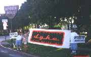

"Dyke Marches: a brief herstory"
Link
DYKE MARCH 2001:
SATURDAY June 16. 6pm
Meet at Lesbo Park located at the corner
of Doheny and Santa Monica Blvd., where West Hollywood meets Beverly
Hills!
Post party after the march. 8 pm.
More information: Call 213-483-4665.
ALL WOMEN WELCOME.
DYKE MARCH 1999:
Join us for the 1999 march. June 12, 1999. Meet at 7pm at Lesbo Park
(corner of Santa Monica Blvd. and Doheny in West Hollywood).
For more information and/or to volunteer, call: 323-692-1029.
DYKE MARCH 1997:
Press release:
Lesbians from all
over
California
will gather at the park on the corner of Santa Monica Blvd. and Doheny
in West Hollywood on Saturday, June 21st, 1997 at 7 pm to rally and march
through the streets culminating in a lesbian - oriented street party.
The 1996 Dyke March drew over 1500 women and organizers are projecting
to triple that number this year. Similar marches in New York and San
Francisco have been known to draw 20,000 to 50,000 women respectively.
The Los Angeles Dyke March is a grassroots, volunteer - based
organization dedicated to all aspects of lesbian visibility and female
empowerment. We are currently accepting donations to pay for advertising
and other expenses. Volunteer positions are also available.
DYKE MARCH 1996: Link
Dyke March, 2001

Dyke March 1997